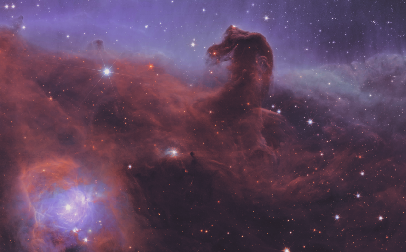
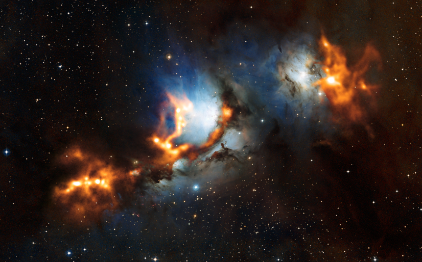
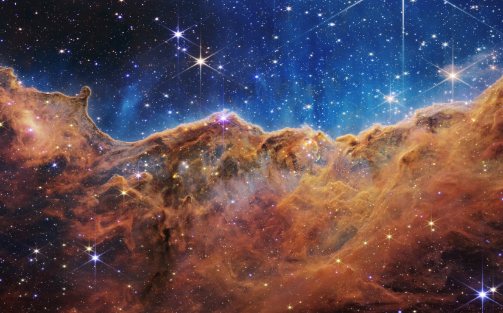
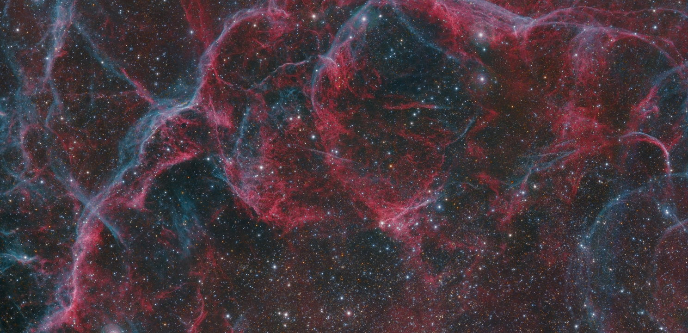

Типы туманностей
Темные туманности
Туманность Конская Голова
Темные туманности состоят из большой концентрации космической пыли и холодного газа. Из за этого они блокируют большую часть звездного света и выглядят как темные участки неба, лишенные звёзд. Также внутри них часто протекают активные процессы, такие как формирование звезд и планет.
Отражательные туманности
Туманность М
78
Такие туманности светятся не своим собственным светом, а за счет его отражения от близлежащих звезд. На фоне звездного неба они светлые и блестящие, а также имеют синий оттенок(так как рассеяние голубого цвета более эффективно, чем красного). Однако встречаются они довольно редко.
Эмиссионные туманности
Туманность Киля
Эмиссионные туманности излучают свой собственный свет, поглощая энергию от окружающих звезд или других источников излучения. Они являются одним из наиболее ярких объектов в Галактике и играют важную роль в формировании и эволюции звезд и галактик.

Туманность Киля
Разновидностью эмиссионных туманностей являются планетарные туманности. Они возникают, когда звезда среднего размера(красный гигант или сверхгигант) находится на заключительной стадии своей жизни. Звезда теряет внешние слои газа, которые образуют облако вокруг нее. Затем в центре этого облака образуется белый карлик, который излучает ультрафиолетовое излучение и заставляет газ светиться, образуя планетарную туманность.
Туманности созданные ударными волнами
Туманность, остаток сверхновой в Парусах
Туманности, созданные ударными волнами образуются в результате взаимодействия звезды с окружающим космическим газом или другими объектами. Ударные волны могут быть вызваны различными событиями, такими как столкновения звездных ветров, взрывы сверхновых, или даже взаимодействие галактик. Эти ударные волны вызывают распространение материи в пространстве, что приводит к формированию туманностей. Эти туманности позволяют ученым изучать процессы звездообразования, эволюции звезд и динамику газа в межзвездном пространстве. Обычно они живут не долго, так как исчезают после исчерпания кинетической энергии движущегося газа.